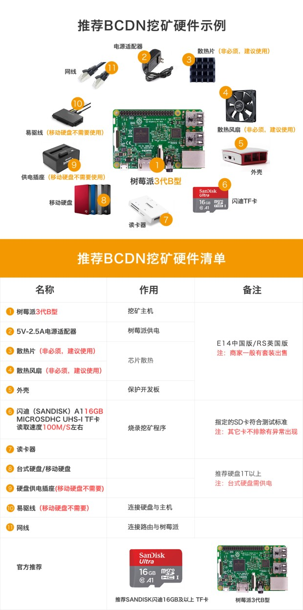
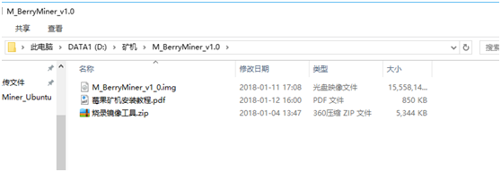
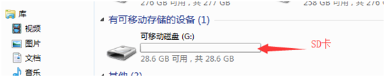
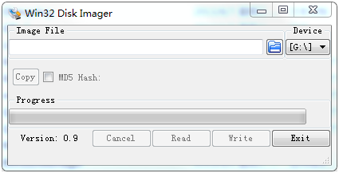
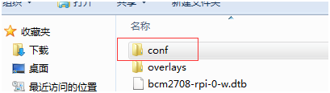
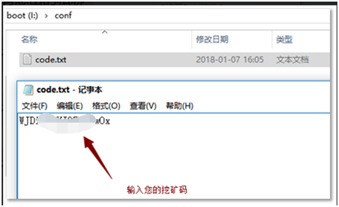
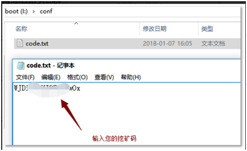
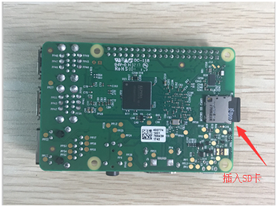
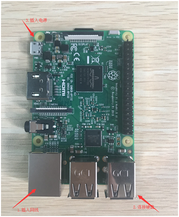
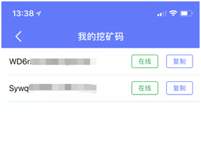

Recommend equipment:
Operating step:
1.Open the webpage:
http://www.blockcdn.org/html/download/

2. Download M-Berry Miner File and Image File to local place
3. Insert SD card into the card reader then into the computer, and open my computer then show a new hard disk
4.Open Image File in the SD card, double click Win32DiskImage
5.Select the image file, and select the hard disk where SD card is, click 【Write】

6.Click 【Yes】, and the bottom number means it writing into file( the writing time is a little long, please be patient)


7.Write Successful, click 【OK】

8. Open SD card, and the conf file, then click code txt and copy the invite code to txt file, save and log out

 

9.Insert the installed SD card into Raspberry Pi, then connect network line and mobile hard disk drive, at last connect the power. If Raspberry Pi ‘ s green light flickers regularly, it shows the mining procedure starts normally.
 10. 11. Check the working condition of your mining procedure and mining income on M-Berry. （Download address：www.blockcdn.org )
